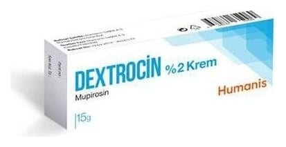

Dextrocin %2 Krem ,15 g

Ne için kullanılır
KT · Bölüm 1DEXTROCİN etkin madde olarak mupirosin içerir. 15 gramlık alüminyum tüplerde piyasaya sunulmaktadır. DEXTROCİN sadece cilt üzerinde kullanılan bir antibiyotiktir ve bakteriyel cilt enfeksiyonlarının tedavisi için kullanılır.